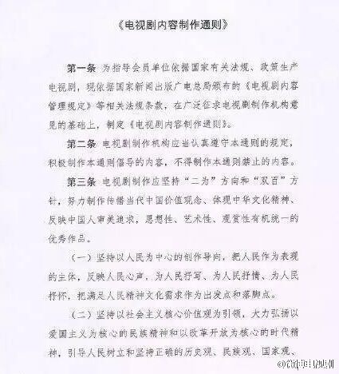
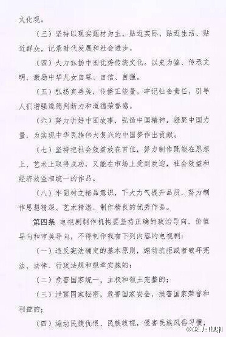
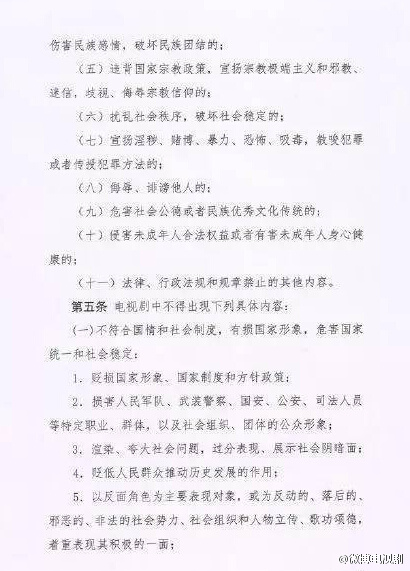
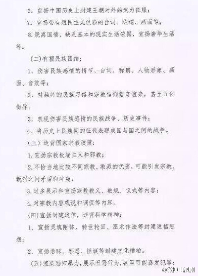
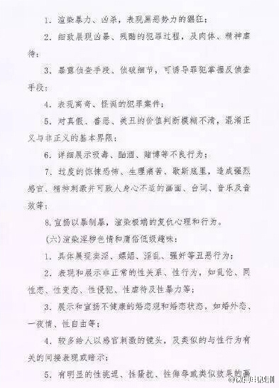
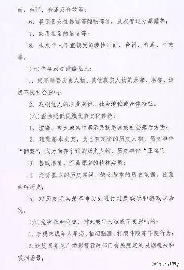
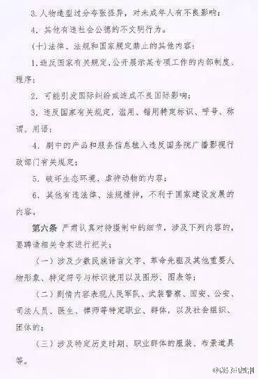
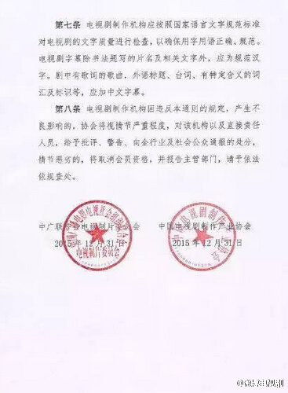

四大名著是没法拍了。西游记封建迷信灵魂附体，红楼梦婚外恋同性恋早恋，水浒传婚外恋，三国演义封建迷信（借东风八卦阵等）……@微博电视剧:#2016电视剧# 【#电视剧通则#曝光：早恋同性恋转世不得出现】新出台的《电视剧内容制作通则》细则中指出，禁止“宣扬灵魂附体、轮回转世、巫术作法等封建迷信思想”、“暴露侦查手段、侦破细节，可诱导罪犯掌握反侦查手段”等内容。此外同性恋、婚外恋、一夜情等也不得出现。[最右] 